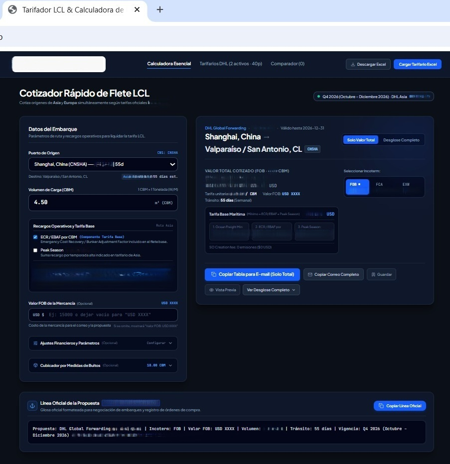

El problema
DHL entrega al equipo dos tarifarios de carga LCL —uno para Europa, otro para Asia— pero calcular una tarifa significa buscar el puerto correspondiente, encontrar la tarifa por CBM o tonelada, multiplicarla por el volumen o peso de la carga, y sumar manualmente los gastos locales cuando corresponden. Le pedí a tres coordinadores que calcularan la tarifa de un mismo origen con el mismo CBM — los tres llegaron a resultados distintos.
Qué hice y por qué
Construí una calculadora web con la data de ambos tarifarios cargada. El proceso se redujo a elegir el puerto de origen e indicar el CBM: la calculadora entrega el valor total o desglosado, redacta automáticamente el correo para pedir aprobación, y verifica si conviene mover la carga FCL en vez de LCL según el volumen. Los tarifarios se pueden actualizar fácilmente, aunque por ahora soy el único administrador que puede hacerlo.

El resultado
El cálculo que antes daba tres resultados distintos según quién lo hiciera, hoy es el mismo sin importar quién lo use — y toma segundos en vez de minutos de búsqueda manual en dos tarifarios distintos.
Qué aprendí
Antes de automatizar un cálculo, vale la pena probar si distintas personas llegan al mismo resultado. Fue esa prueba con tres coordinadores, no una suposición, la que confirmó que el problema era real.